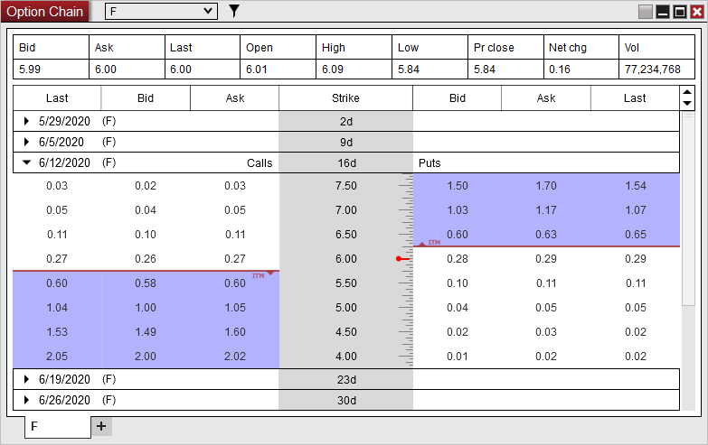
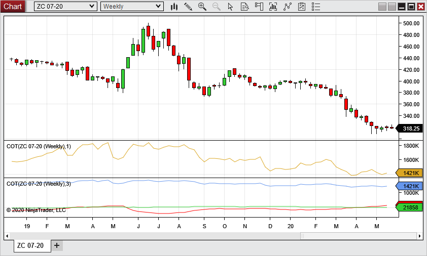
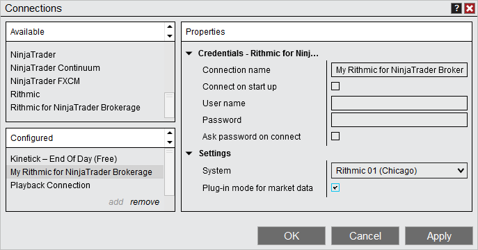

|
<< Click to Display Table of Contents >> 8.0.22.2 |


|
8.0.22.2
|
<< Click to Display Table of Contents >> 8.0.22.2 |
|
June 15, 2020
Issue # |
Status |
Category |
Comments |
14506 |
Fixed |
DrawingTool |
Global drawing tools would not save when closing and saving from another workspace |
June 3, 2020
Issue # |
Status |
Category |
Comments |
14492 |
Fixed |
DrawingTool |
Global drawing tools duplicated when saving the workspace |
June 2, 2020
Features |
Added new TD Ameritrade API TD Ameritrade Feature #14132
TD Ameritrade is requiring that we migrate to a new API, which has been implemented and is released in beta. The API has a lot of similarities between the old, with overall functionality expected to be the same. The new API does add option support for equities and utilizes a new connection type which is only available with supported operating systems, Windows 8 and newer. Please report any issues seen via [email protected]. Note: At this time you may see duplicate executions if you disconnect and reconnect in the same session.
 |
Added COT Indicator Indicator Feature #13802
The COT indicator plots data from the Commitment of Traders reports. These are weekly reports (best viewed on a weekly chart) that come out each Friday showing Tuesday's open interest from market participants. These reports are available for many futures instruments. For more information, please see the COT section of the help guide. Note: You must enable "Download COT data at startup" within Tools> Options> Market data for this indicator to plot.
 |
The Rithmic adapter now support plug-in connection for shared market data Rithmic Feature #14439
This mode should only be enabled if instructed by your data provider, it allows re-use of a single market data login between multiple platforms on the same computer and requires some setup prior to use.
 |
Add support for additional Coinbase cryptocurrencies Coinbase, Instruments Feature #14437
Cryptocurrency pairs can only be properly added if a 3 digit cryptocurrecny code is supported for it. The following cryptocurrecny codes are now available, adding additional support for Coinbase instrument pairs.
ALG (ALGO), ATM (ATOM) DSH (DASH), EOS, KNC, LNK (LINK), OXT, REP, XLM, XRP, XTZ |
Translations improvements Localization Feature #14460
NinjaTrader can be localized to many languages including Spanish, German, French, Russian, Portuguese, Russian, Chinese, and Italian. Language selection can be changed via Tools > Options > General > “Language” option in NinjaTrader. These translations have been improved as part of continual refinement. |
Issue # |
Status |
Category |
Comments |
14402 |
Fixed |
Account Data |
Net Liquidation value on stocks was incorrect |
14441 |
Fixed |
Alerts, Workspaces |
When using 'Save As' on a workspace with active alerts, the alerts would not trigger until the workspace was closed and reopened |
14456 |
Fixed |
ATM Strategies |
When creating a custom ATM, but then selecting cancel, the custom ATM could become active |
14483 |
Fixed |
BarChart, Bars |
Non-last qualifying trades showed in historical data after a recent change from BarChart |
14411 |
Fixed |
Chart |
SPI 06-20 had an incorrect session break on a day of early close |
14405 |
Fixed |
Chart, bars |
Data was removed from chart upon reconnecting to data feed for ASX index futures instruments |
14428 |
Fixed |
Chart, DrawingTool, NinjaScript |
Global draw objects created from NinjaScript could duplicate when instrument was switched by linked Market Analyzer |
14355 |
Fixed |
Chart, Template, Indicator |
When opening a new chart with a template applied that had an indicator, an error occurred if the instrument was switched while still loading |
14357 |
Fixed |
Connections, Strategy |
An enabled strategy became disabled when using multiple connections and the second connection disconnected |
14351 |
Changed |
Control Center |
Removed tool tip timeout from Strategies tab |
14259 |
Fixed |
Control Center |
Updated an error dialog that instructed to reinstall when a reinstall is not needed |
14382 |
Fixed |
Control Center |
Changing risk template on a simulation account did not show a message that a restart would be needed |
14461 |
Fixed |
Control Center |
Changing account denomination resulted in multiple pop ups |
14400 |
Fixed |
Control Center, Database |
Find feature did not work in the "Rollover futures instruments" grid |
14407 |
Fixed |
CQG, Continuum |
Some WebAPI errors caused a disconnect when not necessary |
14088 |
Fixed |
CQG, Continuum |
Resolved incorrectly mapper settlement and last close prices with Web API |
14396 |
Fixed |
DrawingTool |
Switching between series with different "Show global draw objects" settings then setting a drawing to global could show an invalid error |
14365 |
Fixed |
DrawingTool, Chart |
Drawing tools could be removed when rolling over, switching instruments, then going back to the original unrolled instrument |
14362 |
Fixed |
DrawingTool, Chart |
Drawing tools could move to other instruments when changing instruments then rolling over |
14457 |
Fixed |
DrawingTool, Chart |
Copy and pasting a drawing tool with a template set to left scale justification resulted in an error |
14379 |
Fixed |
eSignal |
Pakistan stocks displayed incorrect date stamp on Monday daily bars |
14414 |
Fixed |
FXCM, Account Data |
Realized PnL did not show upon connecting or reconnecting |
14398 |
Fixed |
Historical Data Window |
Downloading data while a chart was loading could result in request getting stuck |
14345 |
Fixed |
Hot Key |
CTRL+SHIFT+TAB hot key did not work if 'Show tabs' was disabled |
14359 |
Fixed |
Indicator, Chart Trader |
Applying FX Tile caused Chart Trader to switch to Sim101 |
14346 |
Fixed |
Indicator, NinjaScript Editor |
Indicator variable settings could reset to default when adding additional variables to indicator |
14342 |
Fixed |
Instruments |
Deleting instruments from recently used instrument list resulted in instrument list closing |
14394 |
Fixed |
Instruments |
Forex and cryptocurrency instruments could have master symbols that were invalid |
13813 |
Changed |
Interactive Brokers |
The required version of Traders Workstation has been updated to 978.2c |
14314 |
Fixed |
Interactive Brokers, Connections |
Auto connect did not work with a simulation license if a market data window was open |
14458 |
Fixed |
Interactive Brokers, Option Chain |
Strike prices would not populate for custom NSE instruments |
14312 |
Fixed |
Market Analyzer |
Auto sort could resort instruments that have the same value when refreshing |
14416 |
Fixed |
Market Analyzer |
The "Profit loss" and "Traded Contracts" columns did not reset when Sim101 was reset |
14318 |
Fixed |
Market Analyzer, Indicator |
VolUpDown indicator column did not populate on Mondays |
14371 |
Fixed |
NinjaScript |
Exporting a strategy with dependent indicators would error if PC's OS language was set to Hungarian |
14291 |
Fixed |
NinjaScript Editor |
Using 'Save as' on a strategy was not creating a new class name |
14390 |
Fixed |
NinjaScript Editor |
Renaming a sub folder would lose scripts excluded from compilation |
14430 |
Fixed |
NinjaScript, DrawingTool |
Draw.Arc with template overload did not use template settings |
14401 |
Fixed |
NinjaScript, Property Grid |
Using a GroupName with a colon resulted in an error |
14391 |
Fixed |
Optimization Fitness |
MinAvgMae optimization fitness metric was using Max MAE value |
14250 |
Fixed |
Order Flow + |
Order Flow Volume Profile would not plot with some interval and session template settings when started |
14463 |
Fixed |
Output Window |
Minimizing the output window then attempting to open a new one did not bring the existing output window forward |
14339 |
Fixed |
Strategy |
Multi-instrument strategies did not take some trades when a more granular series was added of each instrument |
14348 |
Fixed |
Strategy |
Closing chart with a strategy calculating could keep strategy in Control Center |
14422 |
Fixed |
Strategy |
A sell stop order could get an error that it was above the close price when it was not |
14431 |
Fixed |
Strategy |
An unmanaged strategy that had it's position reversed when transitioning from historical to real-time had mismatched trades |
14321 |
Fixed |
Strategy Analyzer |
Backtests had no results when first running with no data then running again while connected for data |
14323 |
Fixed |
Strategy Analyzer |
A resource heavy strategy could get an error when opening an optimization's result in a new window |
14337 |
Fixed |
Strategy Analyzer |
Closing a Strategy Analyzer window during start-up could result in an error |
14377 |
Fixed |
Strategy Analyzer |
Trade and Execution prices could show 2 minus signs if price was negative |
14380 |
Fixed |
Strategy Analyzer |
Strategy performance did not sort by entry or exit price consistently |
14381 |
Fixed |
Strategy Analyzer |
Launching a chart from Strategy Performance could result in an error |
14388 |
Fixed |
Strategy Analyzer |
Backtesting a strategy that uses a DayOfWeek parameter could result in a crash |
14408 |
Fixed |
Strategy Analyzer |
Sorting by quantity did not work as expected |
14412 |
Fixed |
Strategy Analyzer |
AI Generate could have an error when clicking on indicators |
14455 |
Fixed |
Strategy Analyzer |
Strategy Analyzer chart froze when minimizing window after a backtest was run |
14465 |
Fixed |
Strategy Analyzer |
Resolved a scenario where a chart tab would have contents transparent when switching between other windows |
14364 |
Fixed |
Strategy Builder |
Compiling a strategy that called an index instrument not mapped yet caused an error |
14404 |
Fixed |
Strategy Builder |
A couple options had some invalid drop down settings |
14341 |
Fixed |
Strategy, Chart |
Opening strategies settings quickly after applying could result in a lock up and error when trying to close |
14397 |
Fixed |
Strategy, Control Center |
Removing a strategy from the Control Center then restarting without saving the workspace resulted in the strategy returning |
14352 |
Fixed |
SuperDOM |
Order entry window did not regain focus after dismissing global sim mode message box |
14447 |
Fixed |
SuperDOM |
Adjusting active ATM strategy orders while a new ATM is selected generated inaccurate order quantities |
14442 |
Fixed |
TD Ameritrade, Strategy |
Syncing a short position while flat could send a sell order rather than a sell short order |
14399 |
Fixed |
Tick Replay, Bars |
Chart could be missing most recent bar when using Tick Replay and changing session templates |
14425 |
Fixed |
Trade Performance |
Trade Performance window date was based on PC time zone, not NinjaTrader time zone |